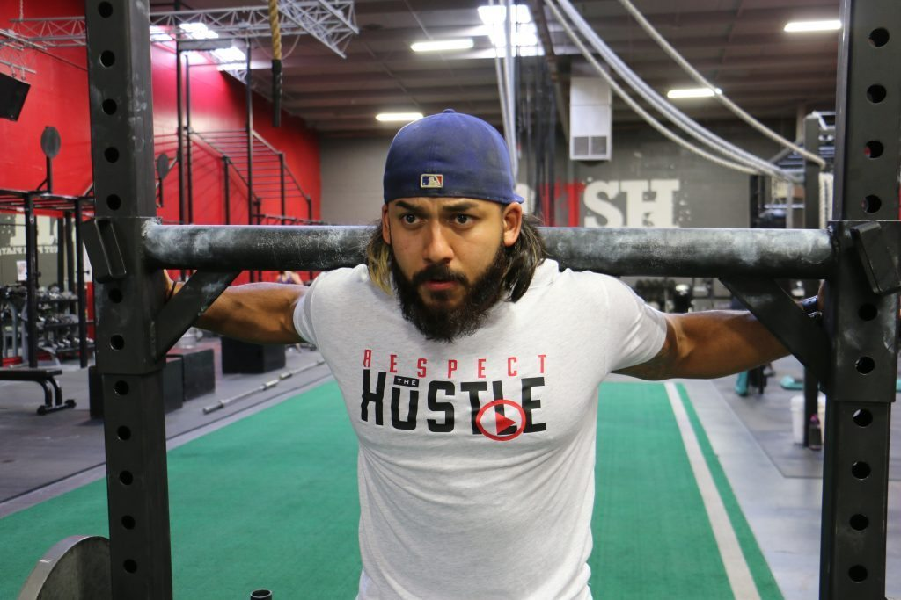

CrossFit?
CrossFit, gücünü qurmaq üçün müqavimət üçün öz bədəninizin ağırlığını
istifadə edən bir növ kondisioner və güc tətbiqidir. Yüksək intensivlikli
interval təliminin faydalarına uyğun olaraq, bu, müntəzəm ürək məşğələləri
və idman zalı üçün sərf edilən vaxt demək deyildir. CrossFit proqramları,
bəzi kəslər müəyyən hərəkətlər üçün çəkilərdən istifadə etməyə qərar
verəcəklərinə baxmayaraq, əlavə ağırlıq və ya hər hansı bir dişli olmadan
tamamilə həyata keçirilə bilər.
CrossFit.com saytının yaradıcıları
tərəfindən qeyd edildiyi kimi, əvvəlki 30 il ərzində yüksək səviyyəli
idmançıların təlimindən alınan bir neçə sadə müşahidələr CrossFit
proqramlarının arxasında əsas prinsipləri formalaşdırmışdır. İşdə bu
gündən etibarən populyarlığının nə qədər artdığını və CrossFit
işəgötürənləri tətbiq olunduqları əsas səbəblərdir:
- Hefty lifters dözümlülük idmançıları daha vəzifələri daha çox güc istifadə
etmək imkanı var. Powerlifters - üç səy içərisində maksimum ağırlıqları
qaldırmağa çalışanlar xüsusilə güclüdürlər.
- Burst Təlimini etmək üçün şəraitli insanlar və sprinterlər ümumiyyətlə
dözümlülük idmançılarının kardiyovaskulyar fayda və bacarıqlarına uyğun
ola bilərlər, lakin daha az vaxt sərf etmişlər.
- Dözümlülük idmançıları və bədən bədii quruluşları adətən çox idmanla
məşğul olurlar - məsələn, aerobik şəkildə və ya olduqca əzələlidirlər,
lakin çox yönlü olmamalıdırlar (bütün gücün, gücün və ya davamlılığın
olması kimi).
- HIIT məşqləri və yüksək intensivlikdə təlimlər (uzadılmış aralıqlarla
davamlı olmağına səbəb olan məşqlər deməkdir) daha çox yağ yanma və kas
quruluşu ilə birlikdə daha sürətli kilo itkisi də daxil olmaqla çoxsaylı
sağlamlıq faydalarına gətirib çıxarır.
- HIIT məşqləri dərhal (bir saat və ya daha çox vaxtlarda) edilə bilər və
hər kəsə dayanıqlı bir şəkildə qüvvət qazanmaq üçün hər gün işləməyə
ehtiyac yoxdur.
CrossFit fiziki cəhətdən sağlam fiziki şəxslərin fərqli bir fonundan bilik-bədənin fayda
verməsi üçün bir tam bədən işi yaratmaq üçün bir araya gətirir. Xüsusilə CrossFit
proqramları "10 Fitness Realms" i əhatə edir:
- Ürək-damar və tənəffüs
- Stamina
- Güc
- Elastiklik
- Elektrik
- Sürətləndirmək
- Koordinasiya
- Çeviklik
- Qalıq
- Dəqiqlik
6 CrossFit Proqramlarının Faydaları
- Daha yaxşı vəziyyətdədir və çox yönlüdür
CrossFit proqramları gündəlik işlərin daha yaxşı yerinə yetirilməsini (çəməni biçmək kimi) və ya bədəninizi tələb edən müsabiqələrə hazırlamağını bildirməklə fiziki performansı müxtəlif şəkildə artırmaq üçün edilir. CrossFit idmançıları əzələlərini, oynaqlarını və ligamentlərini funksional hərəkəti istifadə edərək məşq edir, yəni bir çimərlik kostyumunda sadəcə böyük bir şey axtarırlar. Böyük əzələ toxumaları və müxtəlif hərəkət zonalarından istifadə edən yaxşı yuvarlaqlaşdırılmış məşqlər daha ümumi sağlamlıq, güc, rahatlıq, duruş və balans gətirə bilər.
- Tabelelendən keçmək bacarığı
CrossFit geniş çeşidlidir və yüksək güclü şəkildə aparılmış mürəkkəb və ya funksional hərəkətlərə əsaslanır. Bu cür təhsil, fitnə nəticələrinə nail olmaqda ən qısa zamanda miqdarda təsirli sayılır.
CrossFit gündən-günə təkrarlanan bir məşq deyil, əslində əksinə əksinədir. Əməliyyatların növlərini, əzələlərin istifadəsi və intensivliyini davamlı olaraq dəyişməklə, CrossFit məşqləri sizdən əzələlərin daim yeni yollarla işləməyinizə görə yamacında saxlamağa kömək edir. Hər bir planın özü, insanların hər cür yaşayışını yerləşdirmək üçün düzəldilə bilər, sadəcə ağırlıq yükünü, müddəti və fiziki sağlamlıq səviyyəsinə əsaslanan proqramın intensivliyini dəyişərək.
- Ağırlığı Shedding kömək
Çox insanın davamlı dövlət ürək təlimlərini etmələrindən qorxaraq, hələ də çəki itirmək istəmədikləri üçün özlərini məcbur etsə də, yüksək güclü partlayış təlimlərinin daha çox yağ və daha az vaxtda yandıra biləcəyini bilirlər.
Güc və kondisioner jurnalında nəşr olunan bir 2013 araşdırması, yağ zərər və əzələ qazanması daxil olmaqla, bədən tərkibində irəliləyişlərin bir CrossFit planı olanların hamısı üçün vacibdir. Tədqiqatın səbəbi aerobik fitness və bədənin tərkibində CrossFit tərəfindən yaradılmış yüksək intensiv güc təlim (HIPT) proqramının nəticələrini təhlil etmək idi. 23 sağlam, yetkin kişilər və 20 sağlam, yetkin qızlar bütün bədənin makiyaj və aerobik fitness səviyyələrini keçərək 10 həftə HIPT-ni bitirdi. Onların işi, çömçə, ölü, təmiz, qapmaq və üstü mətbuat kimi liftlərdən ibarət idi.
Bədənin yağ yüzdəsi, məşq proqramından əvvəl və sonra, maksimal aerobik qabiliyyəti (VO2max) ilə davamlılıq inkişaflarına baxıldı. 10 həftəlik məşqdən sonra nəticələr VO2max-ın əhəmiyyətli inkişaflarını nümayiş etdirdi və həm kişilərdə, həm də qadınlarda bədən yağının azaldığını göstərir. Mutlak oksijen tüketimi ile vücut ağırlığına göre oksijen tüketimi arasında kritik korelasyon katsayıları ek olarak CrossFit'in egzersizlerinin kendi yağ ve kas iyonlarının, beden kompozisyonunun, cinsiyetinin veya fitness düzeylerinin başlangıçta meydana gelen değişikliklerinden bağımsız olarak VO2max'ı geliştirmeye yardımcı olur.
- Daha az vaxt işləyirdi, amma daha çox nəticə
Bir çox insanlar mütəmadi olaraq vaxt keçirdiyinizi düşünürsəniz, bu məşqlərin həssaslığını mütəmadi olaraq həyata keçirmək üçün vaxtları yoxdur və onlar bir məşqdə necə sıxılacağını başa düşdükləri zaman ən böyük üstünlüklərindən istifadə edə bilməyəcəklər. Qrup əsaslı yüksək intensivli funksional təlim (HIFT) özünü seçilmiş intensivlik səviyyələrində vaxt sərfəli aerob və müqavimət göstərməyi təmin edir. Araşdırmalar daha qısa və daha sıx olan bu cür məşqləri göstərir ki, intensivliyi nəzarəti ilə birləşərək, sadiqliyini artıra bilər.
Kansas Dövlət Universitetində Kinesiologiya Departamentinin 2013 tədqiqatı HIFT-in orta ağırlıqlı aerob və müqavimət təliminə (ART) qarşı tətbiq olunan hərəkətlərin təşəbbüskarı, zövqü, sadiqliyi və hədəfləri ilə müqayisədə təsirini təhlil etmişdir. HİVT-in iştirakçıları ARTWORK iştirakçılarına nisbətən həftədə bir dəfə daha az vaxt sərf etdilər, həqiqi həzzdən istifadə edə bilirdilər. Çox adam apatiya və ya vaxt çatışmamazlığı səbəbindən istifadə etməməyə qərar verdiyini nəzərə alaraq, CrossFit işi kimi yüksək intensivliyin həyata keçirilməsi alternativləri vəzifəni yaxşılaşdırmaq üçün ictimai səhiyyə müdaxilələrinin bir hissəsi olmalıdır.
- Davamlı Motivasiya və Qatı Dəstək Sistemi
Bir çox insanı cəlb edən və bir-birinə ayıran bir şey, onun cəmiyyətin güclü mənasıdır. Group based exercise ayarlarınızdan qaynaqlanan davamlı dəstək sayəsində CrossFitters, "CrossFit Box" içərisində kursu ilhamlandırmaq, təşviq etmək və təlimatlandırmaq üçün digər idmançıları əldə etmək üstünlüklərini əldə edir.
Araşdırmalar CrossFit'e bənzər qrupda işləmək insanların sinifi daha müsbət qəbul etmələrinə kömək edir. Güclü və Kondisyon Dergisi'nde yayımlanan bir 2014 çalışması, CrossFit'in hedef strukturlarının katılımcılarının anlayışlarını ve eğitici ve diğer sporcuların desteklediği motivasyonlu iklimini değerlendirmek üçün ümumi 144 üzvlerinden (88 qadınlar ve 56 kişilər) topladığı anketleri topladı. Hedefler cinsiyete bağlı olaraq farklı olmasına baxmayaraq, üyeler genellikle üyelik sürecinde olduğu kimi, fitness ile ilgili hedeflerindeki plan ve değişikliklerle kalma motivasyonunu hissetmişlerdir.
Bir dəstək sistemi sizi yolda saxlamağınız və sizə yeyib-qoruyan maneələrin aradan qaldırılmasına yardım etmək üçün vacibdir. Qrup motivasiyası, daha yaxşı nəticələrə bərabər olan, daha aşağı seçim dərəcələri və daha çox məsuliyyət deməkdir!
- Bir idmançı kimi yeməyi dəstəkləyən bir cəmiyyət!
Çox CrossFit idmançıları daha güclü, daha incə, daha sürətli və bərpa vaxtını artırmaq üçün Paleo Diet-dən sonra başlamağı üstün tuturlar. Əlbəttə ki, gündəlik dietinizi dəyişdirməməyə ehtiyac olmadan CrossFit məşqlərini etmək mümkündür, lakin daha yaxşı sağlamlıq faydaları və daha sürətli nəticələr əldə etmək üçün müəyyən yemək vərdişlərini dəyişdirən əhəmiyyətli yollara gələ bilər. CrossFit idmançıları aşağıdakı qidaları ən çox yeməlidirlər: İncə ət və zülallar (qəfəssiz yumurta, yabanı tutulmuş balıq, çəmən bəslənmiş mal əti), tərəvəz, meyvədə bəzi meyvələr, qoz-fındıq və toxum, az miqdarda nişasta tərəvəzlər (şirin kartof kimi) yams, plantains) və hindqozu məhsulları, avokado və ya əlavə viran zeytun yağı olan sağlam yağlar çoxdur.
Paleo pəhriz əsasən aşağı karbohidratlı pəhriz olmasa da, bütün işlənmiş qidalar, şəkər, taxıl, fasulye və baklagiller yerləşdirdiyi üçün təbii olaraq az carbs yemək yolu deməkdir. Əzələ toxuması bəzi təbii nişastalar, meyvə və tərəvəzlərin yükləri şəklində özlərini düzeltmek üçün lazım olan qlükozanı alır, lakin aralıq halda, aşağı karbon istehlakı və yüksək protein / yağ sizi doldurur və yağ yanma ilə kömək edir.
CrossFit proqramlarını necə həyata keçirmək olar?

Bir CrossFit mərkəzini ziyarət etməyi və ya internetdə tapdığınız bir protokola əməl etməyi təyin etsəniz, "Günün Proqramı, adətən CrossFit məşqlərini edir" deyərək WOD adlı da adlanır. CrossFit-ə yeni olduğunuz halda WOD'lar belə görünə bilər ki, burada bir az təəccüblə işləyirlər:
Bu, əsas lingo aşağı almaq üçün kömək edə bilər. Bir "rep" (və ya təkrarlama) bir dəzgah mətbuatı və ya bir çömçə kimi bir hərəkətin təkrarlanmasıdır. "Set" 10 reps və ya squats kimi bir neçə təkrardır. Hər bir WOD adətən müəyyən hərəkət növlərinin müxtəlif növlərinə malikdir. Layout dəstləri tamamlamaq, dinləmək, təkrarlamaq, dinləmək, dublikat və s.
Dəstəklər arasında istirahət üçün vaxt səviyyəsi bir neçə fərqli faktordan asılıdır, məsələn, bacarıqlarınızın bərpası və WOD-ın əsas məqsədi. Bəzən sizin WOD-nun vaxtında olmasını sına bilərsiniz, buna görə də bu vəziyyətdə sizin istirahət müddətiniz çox güman ki, bütün CrossFit məşqlərini daha tez başa çatdıracaq deməkdir.
Bir CrossFit qutusunda bir sinifdə iştirak etsəniz, WOD təsviri bir neçə fərqli şəkildə yazıla bilər. Məsələn, "bir turda bir WOD yaparken daha sonra bütün dövrəni təkrarlayaraq, bir çox məşq toplamağı dinləmək və icra etmək olardı. Bir nümunə olaraq, bu cür WOD "21-15-9" kimi yazıla bilər, bir manevrinizi 21 dəfə yerinə yetirir, daha sonra başqa bir həyata keçirilir və 21 dəfə. Sonra başlanğıcdan başlayır və ilk məşq 15 dəfə, ikinci məşq 15 dəfə və s.
Özünüzdə bir CrossFit tərzi məşq etmək qərarına gəlsəniz, əlavə çəkilər olmadan tanış olduğunuz hərəkətləri tətbiq edərək başlayın. Daha yüksək repetiyaları idarə etmək və ya əlavə ağırlıq əlavə etmək üçün fiziki cəhətdən daha yüksək səviyyəyə çıxana qədər aşağı səviyyəli nümayəndələri ilə tədricən başlayın. WOD'larınızda məşəllərin kalorilerini içərisinə gətirmək üçün birləşmənin bəzi hərəkətləri bir anda əzələlərin böyük qruplarını hazırlayır:
- Burpees
- Sitat gətir
- Damcı
- Situps
- Push up
- Əllər dayanır
- Squats
- Cartwheels
- Deadlifts
- Bench press
- Güc təmizləyir
- Tərəzi
- Holds
CrossFit üslubunda əsasən hər hansı bir yüksək güclü proqram həyata keçirilə biləcəyi üçün, CrossFit-in işlənməsi zamanı müxtəlif avadanlıqlar istifadə edilə bilər. Bu, daha çox yönlü və sizin üçün hər yerdə məhsuldar bir iş yaratmaq üçün imkan verir, bir kənarda, bir yolda, qarajınızdakı və ya zirzəmidə ola bilər. Proqramı növbəti dərəcəyə keçirmək üçün lazım olan hadisə barədə düşünmək üçün bir sıra əsas donanımlar, satınalma aşağıdakılardan ibarətdir:
- Stasionar velosiped
- Olimpiya çəkiləri
- Rings
- Paralel barlar
- Yoga və ya məşq mats
- Horizontal bar
- Plyometrics olan qutular
- Tibb və stabillik topları
- Halları at
- Hefty halatlar
CrossFit öz əzələləriniz üçün çətin olduğundan, "istirahət günlərini" planlaşdırdığınızdan əmin olmalısınız. Haftalık proqramın bəzi ümumi nümunələri üç gün / bir gün istirahət, ya da beş gün / iki gün istirahət edə bilər. Sizin dəqiq məşq proqramınız məqsədlərinizə, intensivliyinizə və bərpa qabiliyyətinizə bağlıdır.
CrossFit proqramlarının mümkün təhlükələri nədir?
CrossFit təliminə aid potensial xəsarətlərə son vaxtlar çox tənqid olunub. "Strength and Conditioning Journal" jurnalında dərc olunmuş bir 2013 tədqiqatına əsasən, CrossFit məşğələlərinə bağlı risklər kas-iskelet yaralanmaları və rabdomiyolizdir. Lakin, tədqiqatçılar tibbi jurnallarda CrossFit zərər dərəcələrinin yüksək intensivliyin digər üslubları ilə müqayisədə daha yüksək olduğunu göstərmək üçün heç bir sübut mövcud olmadığına işarə edir.
132 online sorğular beynəlxalq CrossFit forumları arasında başa çatdıqdan sonra məlumat 3.1-da xəsarət yetirilməsinin 1000-da təlim keçdiyini hesabladı. CrossFit təhsili ilə zərər dərəcələri Olimpiya ağır atletika, gimnastika və pauerliftinq, eləcə də rugby kimi aşağı əlaqəli idman növləri üçün idmana aid olanlara bənzəyir. Bildirildiyimiz yaralanmalardan biri, bel və çiyin xəsarətləri üstünlük təşkil edir.
Özünüzü təhlükəsiz saxlamaq və yaralanmaların qarşısını almaq və ya tıxacın qarşısını almaq üçün düzgün işıqlandırmaq, bir işdən sonra uzanmaq və özünüzü bərpa etmək üçün kifayət qədər vaxt vermənizə əmin olun.